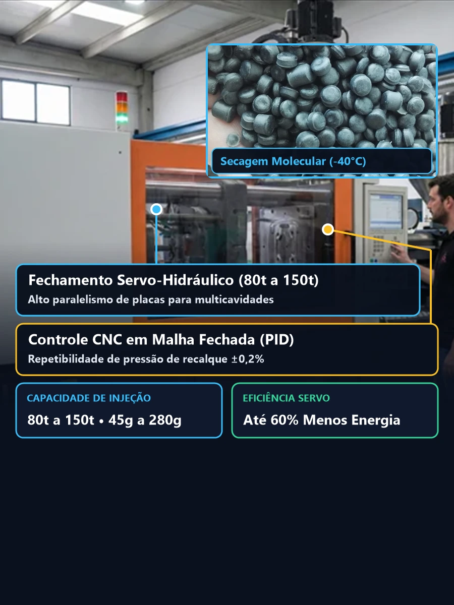
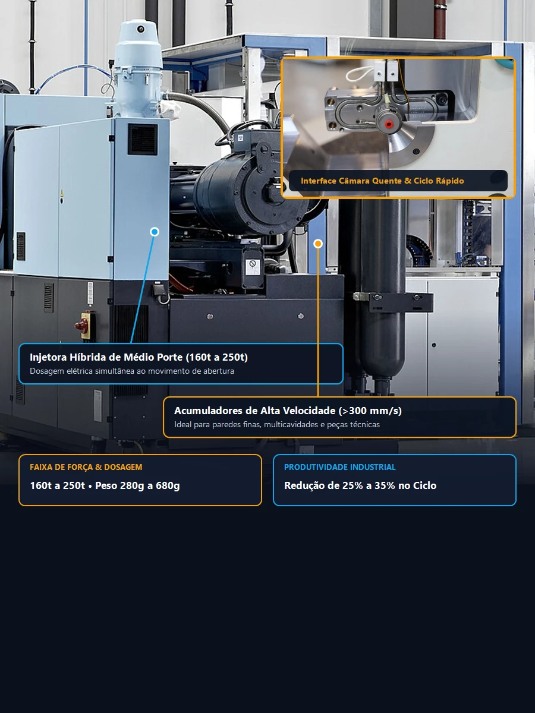
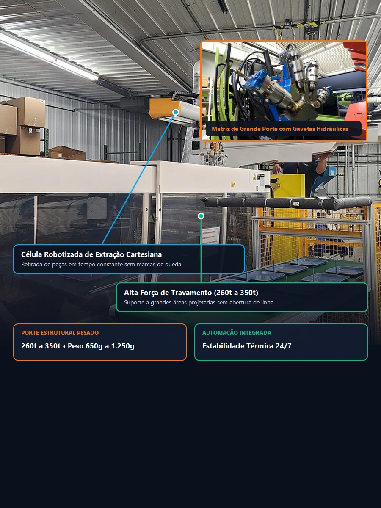
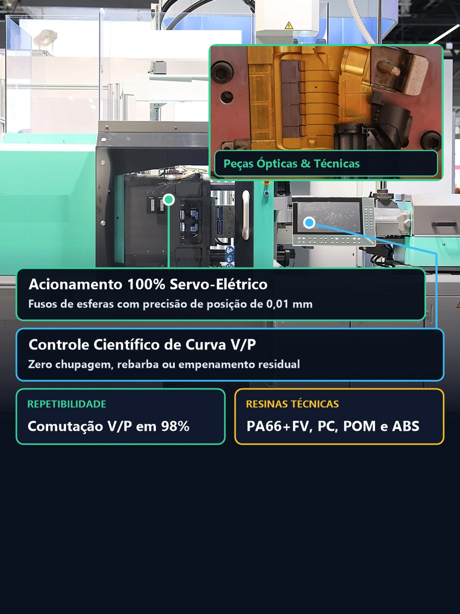

Takeaway Técnico (Diretriz de Decisão para Gerentes de Suprimentos):
A escolha do fornecedor de injeção técnica não deve se basear apenas no custo da hora-máquina, mas na estabilidade de ciclo e taxa de refugo (ppm). Processar polímeros de engenharia (como Poliamida com fibra ou Poliacetal) sem estufa desumidificadora adequada causa hidrólise molecular e perda de até 40% da resistência ao impacto. Nossa estrutura fabril conta com desumidificação contínua e controle paramétrico travado no CLP da injetora.
Polímeros Técnicos Processados e Suas Aplicações Industriais
Cada família de polímeros possui reologia, temperatura de transição vítrea (Tg) e coeficiente de contração volumétrica específicos:
| Polímero Termoplástico | Principais Propriedades | Contração Típica (%) | Setor de Destino |
|---|---|---|---|
| PA 6 e PA 6.6 (Nylon) | Resistência mecânica, química e abrasão | 1,2% a 2,0% | Automotivo / Máquinas industriais |
| PA 6.6 + 30% Fibra de Vidro | Altíssima rigidez estrutural e térmica | 0,4% a 0,8% | Substituição de metal / Conexões sob pressão |
| POM (Poliacetal) | Autolubrificante, estabilidade dimensional | 1,8% a 2,5% | Engrenagens, roldanas e buchas técnicas |
| ABS e Blendas PC/ABS | Excelente acabamento estético e resistência ao impacto | 0,5% a 0,8% | Gabinetes eletrônicos, painéis automotivos |
| PC (Policarbonato) | Transparência cristalina e resistência mecânica extrema | 0,6% a 0,8% | Lentes técnicas, visores, equipamentos médicos |
| PP (Polipropileno) | Resistência química, flexibilidade, baixo custo | 1,5% a 2,2% | Embalagens, tampas com dobradiça viva, utilidades |
Parque Fabril Homologado: As 4 Classes de Injetoras Mais Utilizadas (80t a 350t)
Nossa planta produtiva homologada opera com 4 famílias complementares de máquinas injetoras horizontais — selecionadas de acordo com a área projetada da peça, pressão de cavidade, exigência de ciclo e tolerância dimensional:

Servo-Hidráulica de Precisão
Peças Técnicas, Buchas, Conectores e Multicavidades
Bomba servo-acionada de baixo consumo e controle PID de zona térmica.

Híbrida de Médio Porte e Ciclo Rápido
Gabinetes Eletrônicos, Caixas Técnicas e Automotivo
Dosagem simultânea e extração robotizada para alta produtividade 24/7.

Alta Força de Fechamento
Peças Estruturais, Painéis e Moldes de Grande Porte
Amplo vão entre colunas, circuito hidráulico para gavetas (core-pull) e câmara quente.

Servo-Elétrica de Alta Repetibilidade
Lentes em PC, Dispositivos Médicos e Tolerância ±0,02 mm
Fusos de esferas recirculantes e comutação V/P em 98% do volume da cavidade.
Servo-Hidráulica de Precisão
Ideal para componentes técnicos de pequeno e médio porte, buchas, engrenagens em POM/PA66 e moldes multicavidades (4 a 32 cavidades). Equipada com servomotor acoplado à bomba hidráulica, garante repetibilidade de pressão de recalque superior a 99,5% e partida rápida.
Híbrida de Médio Porte e Ciclo Rápido
Projetada para gabinetes eletrônicos em ABS/PC, carenagens industriais e peças automotivas com parede fina ou média. Combina fechamento por joelheira (toggle) de alta velocidade com dosagem elétrica simultânea e manipulador cartesiano (robô) para extração sem marcas.
Alta Tonelagem e Automação Pesada
Dedicada a peças de grande área projetada (até 1.150 cm²), caixas estruturais, grades frontais e polímeros carregados com 30% a 50% de Fibra de Vidro. Possui amplo espaço entre colunas (até 710 × 710 mm), múltiplos circuitos hidráulicos para gavetas (core-pull) e controle integrado de câmara quente.
Alta Repetibilidade (Peças Ópticas e Médicas)
Acionamento por fusos de esferas recirculantes (precisão de posição de 0,01 mm) e operação isenta de névoa de óleo hidráulico. Essencial para visores e lentes em Policarbonato (PC) cristal, microengrenagens e dispositivos médicos com tolerância centesimal de ±0,02 mm.
Tabela de Capacidade e Dimensionamento de Injetoras (80t a 350t)
Parâmetros Reais de Máquina| Classe / Força de Fechamento | Volume / Peso Máx. Injetado (PS) | Espaço Entre Colunas (H × V) | Área Projetada Máx. | Peças e Lotes Recomendados |
|---|---|---|---|---|
| Classe 01: 80t a 150t Servo-Hidráulica |
95 g a 280 g | 360 × 360 mm a 470 × 470 mm | Até 380 cm² | Conectores, buchas, engrenagens POM, tampas e moldes multicavidades |
| Classe 02: 160t a 250t Híbrida Ciclo Rápido |
310 g a 620 g | 510 × 510 mm a 580 × 580 mm | Até 720 cm² | Gabinetes eletrônicos ABS/PC, caixas de passagem, peças automotivas |
| Classe 03: 260t a 350t Alta Tonelagem + Gavetas |
680 g a 1.150 g | 620 × 620 mm a 710 × 710 mm | Até 1.150 cm² | Carenagens estruturais, PA66+FV, painéis frontais e moldes com câmara quente |
| Classe 04: 100t a 220t Servo-Elétrica Dedicada |
110 g a 450 g | 420 × 420 mm a 560 × 560 mm | Até 600 cm² | Visores e lentes ópticas em PC, componentes médicos e tolerância ±0,02 mm |
Controle de Variáveis Reológicas, Periféricos em Malha Fechada e Sobreinjeção
A estabilidade dimensional e a resistência mecânica de uma peça injetada não dependem apenas da máquina injetora: mais de 70% das falhas estruturais em plásticos de engenharia (como hidrólise, fragilização por degradação térmica, empenamento diferencial e linhas de solda frias) são causadas pela ausência de periféricos de precisão e pelo ajuste empírico de máquina. Na Portal Molde Injeção, aplicamos os 3 pilares da Injeção Científica:
Desumidificação Molecular em Malha Fechada
Polímeros higroscópicos como PA66, Policarbonato (PC), PBT, PET e ABS absorvem umidade atmosférica para o interior do grânulo. Se injetados em funis estufa comuns (que apenas aquecem o ar úmido ambiente), sofrem hidrólise no canhão: as cadeias moleculares se rompem, gerando estrias prateadas (splay) e queda de até 45% na resistência ao impacto.
- ▸ Peneiras Moleculares (Zeólita): Ar seco com ponto de orvalho de -40°C para umidade residual < 0,02%.
- ▸ Alimentadores a Vácuo: Transporte pneumático hermético que impede a reabsorção de umidade até a rosca plastificadora.
- ▸ Dosadores Gravimétricos: Homogeneização exata de masterbatch ou aditivo UV entre 1,0% e 3,0% sem variação de cor entre lotes.
Injeção Desacoplada e Termorregulação Pressurizada
Em vez de parâmetros empíricos, utilizamos o método de Injeção Desacoplada (Decoupled Molding): separamos rigorosamente a fase de preenchimento volumétrico por velocidade (para estabilizar a viscosidade aparente do polímero) da fase de compactação e recalque por pressão escalonada até o congelamento do ponto de injeção (gate seal).
- ▸ Termorreguladores (15°C a 140°C): Controle independente entre placa fixa e móvel para cristalização uniforme de PA66 e POM.
- ▸ Regime Turbulento (Re > 4.000): Vazão calibrada nos manifolds que elimina o empenamento diferencial pós-extração.
- ▸ Monitoramento de Colchão (Cushion): Supervisão ciclo a ciclo da almofada residual (3 mm a 6 mm) com alarme automático de refugo.
Sobreinjeção de Insertos Metálicos e Operações Secundárias
Entregamos componentes prontos para a linha de montagem final do cliente. Executamos tanto a sobreinjeção direta (Insert Molding) de buchas roscadas em latão/aço inox, pinos elétricos e rolamentos dentro da cavidade do molde quanto a inserção térmica/ultrassônica pós-moldagem e submontagem de kits.
- ▸ Sobreinjeção de Buchas e Terminais: Ancoragem mecânica de alto torque sem trincas por tensão residual no polímero.
- ▸ Overmolding (Bicomponente / TPE): Sobremoldagem de elastômero termoplástico (TPE/TPU) sobre substrato rígido (PP/ABS/PA).
- ▸ Ferramentaria de Apoio 24h: Manutenção preventiva e corretiva imediata em extratores, bicos de câmara quente e gavetas.
Como Funciona a Migração dos Seus Moldes e a Contratação de Injeção Terceirizada
Muitas indústrias sofrem com atrasos recorrentes, refugo elevado ou falta de atenção do seu injetor atual, mas temem o risco de transferir suas matrizes. Nosso protocolo de Onboarding de Ferramental B2B garante transição em até 5 dias úteis sem interrupção do seu estoque de segurança:
Check-list de Recebimento de Matriz
Inspeção física na chegada do molde: medição de altura de fechamento, anel de centragem, olhais, teste de estanqueidade e vazão das linhas d'água e resistência ôhmica da câmara quente.
Try-out e Carta de Processo
Execução do lote piloto de homologação, definição da janela científica de processo (temperatura, pressão V/P, recalque e ciclo) e envio de amostras com Laudo Dimensional para aprovação da sua Qualidade.
Full Service ou Industrialização (Facon)
Flexibilidade fiscal e operacional: fornecemos a peça completa com resina homologada e certificado de matéria-prima (Full Service) ou industrializamos a resina enviada pela sua empresa via remessa (CFOP 5.901 / 5.124).
Entregas Kanban e Rastreabilidade
Programação de entregas Just-in-Time (JIT) ou manutenção de estoque pulmão dedicado em nossa planta. Cada caixa ou palete sai identificado com lote de resina, data/turno, operador e laudo de inspeção.
Perguntas Frequentes sobre Serviços de Injeção Plástica
Já possuo os moldes, vocês aceitam apenas o serviço de injeção plástica (transferência de ferramental)?
Sim. Executamos a transferência segura de ferramental com auditoria dimensional de recebimento: checagem do anel de centragem, altura de molde (mínima/máxima), furação de fixação ou garras nas placas, circuitos hidrotérmicos e integridade de gavetas ou câmara quente. Após o try-out de homologação e emissão do laudo dimensional e Carta de Processo, iniciamos a produção seriada contínua.
Vocês fornecem a matéria-prima (Full Service) ou o cliente pode enviar a resina (Facon / Industrialização)?
Operamos em ambas as modalidades B2B: (1) Full Service (Fornecimento Turnkey), em que adquirimos polímeros virgens homologados, masterbatches e insertos metálicos diretamente de petroquímicas e distribuidores oficiais com Certificado de Análise (CoA); ou (2) Facon (Industrialização por Encomenda via CFOP 5.124/5.902), onde o cliente envia sua resina e cobramos exclusivamente a taxa de transformação (hora-máquina e mão de obra).
Qual é o lote mínimo para terceirização de injeção plástica e como funciona o atendimento Kanban?
Dimensionamos o lote econômico de produção (MOQ) de acordo com o tempo de setup da matriz, consumo de purga de canhão e necessidade de desumidificação prévia (em média 4 horas para PA66, PC e PBT). Atendemos desde lotes técnicos recorrentes a partir de 500 a 1.000 peças até contratos anuais de alto volume com entregas programadas Just-in-Time (JIT) e estoque pulmão Kanban.
Quem realiza a manutenção preventiva do molde do cliente durante o contrato de injeção?
Todos os moldes sob nossa guarda contam com manutenção preventiva de rotina inclusa a cada fim de lote produtivo: limpeza química da linha de fechamento e saídas de gases (vents), lubrificação de colunas, pinos extratores e gavetas com graxa sintética de alta temperatura (PTFE), desmagnetização e aplicação de película protetiva anticorrosiva antes do armazenamento em porta-paletes.